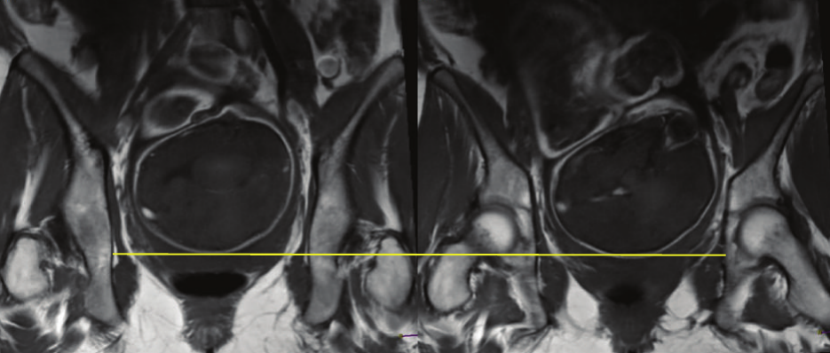

Página 12 · Parte A · Paredes
Quando a cabeça chega ao ponto mais apertado: insinuação e o zero da régua
Duas frases sobre a mesma paciente: 'a insinuação acontece quando a cabeça atinge o nível das espinhas isquiáticas' e 'o ponto mais baixo do polo cefálico está abaixo das espinhas isquiáticas'. Parecem se contradizer. As duas estão certas — e quem não vê por quê erra a questão.
Duas frases que parecem se contradizer, e as duas estão certas
As duas aparecem em enunciados e em gabaritos, e o aluno que não separa o que cada uma descreve trava. A primeira define quando começa a insinuação. A segunda descreve onde está um feto específico, num momento específico. Uma é a régua; a outra é a leitura. Elas convivem, e a página inteira serve para mostrar como.
O zero da régua é o nível das espinhas
A régua usada aqui é a de De Lee, e ela é a que vale na avaliação da descida ↗A3. O plano 0 é o plano que passa pelas espinhas isquiáticas — a linha biespinhal. O que se mede é a distância, em centímetros, entre o ponto mais baixo do polo cefálico e esse plano.
Repare que o zero não foi escolhido por conveniência: as espinhas delimitam o biespinhal, 10,5 cm, o menor diâmetro da pelve. O zero está no gargalo. Essa é a informação que dá sentido a tudo o que vem — chegar ao plano 0 não é "estar no meio do caminho", é ter atravessado o ponto mais estreito.
O que é estar insinuada
A definição formal é esta: insinuação (ou encaixamento) é a passagem da maior circunferência da apresentação através do estreito superior. Na apresentação cefálica fletida, é a passagem do diâmetro biparietal pela entrada do canal.
E há uma tradução clínica, que é como isso se afere à beira do leito, sem imagem e sem régua: quando o ponto mais baixo do polo cefálico atinge o nível das espinhas isquiáticas — isto é, De Lee 0 — a maior circunferência já atravessou a entrada. As duas formulações descrevem o mesmo evento: uma pela geometria (a maior circunferência passou o aro de cima), outra pelo que o dedo encontra (o ponto mais baixo chegou ao meio do canal).
Junte as duas peças, porque é essa junção que a fonte salta e o leitor perde: a régua tem um zero, o zero é o nível das espinhas, e chegar ao zero significa estar insinuada.
Para baixo do zero: +1, +2, +3
Acima do zero, os números são negativos — a cabeça ainda está alta. Abaixo do zero, são positivos: +1, +2, +3, um centímetro cada, medindo o quanto o ponto mais baixo já desceu para além do plano das espinhas em direção ao assoalho. A régua completa, com todas as estações e os critérios que delas derivam, é território da avaliação da descida ↗A3; o que interessa aqui é a origem óssea do zero e a leitura de um número.
Lendo o caso: por que +1 já é insinuado
Considere o enunciado: parturiente com dois partos vaginais anteriores, colo medianizado, esvaecido, pérvio para 6 cm, e a apresentação fetal em +1.
A banca quer que se afirme: essa apresentação está insinuada — e é esse reconhecimento que restringe a resposta. A alternativa correta se apoia numa frase: o ponto mais baixo do polo cefálico está abaixo das espinhas isquiáticas.
E aqui a contradição aparente se desfaz por completo:
> A régua da descida tem um zero, e o zero é o nível das espinhas isquiáticas — as mesmas saliências que marcam o ponto mais apertado da bacia. Quando o ponto mais baixo da cabeça chega nesse nível, o feto está insinuado: a maior circunferência da cabeça já atravessou a entrada do canal. > Dali para baixo conta-se +1, +2, +3 — um centímetro cada. Então um feto em +1 está 1 cm abaixo das espinhas: ele já passou do zero, já está insinuado, e o seu ponto mais baixo está, sim, abaixo das espinhas. > As duas frases dizem a mesma coisa: a insinuação começa no zero, e +1 já é depois dele.
Uma nota sobre o que não se abre aqui: o sistema de planos, os critérios de descida e o que cada estação autoriza ou proíbe em termos de conduta são território próprio ↗A3. A contribuição desta página é o osso — a espinha isquiática como zero, e a razão pela qual o zero está justamente ali.
E uma última nota, de vocabulário: existe outra numeração para a mesma descida, usada em parte da literatura europeia. A régua das provas brasileiras é De Lee, em centímetros, com o zero nas espinhas — e usar uma segunda numeração em paralelo só acrescentaria carga sem acrescentar informação.
Escolha uma estação pontual (sem escala completa).

Polo cefálico no plano das espinhas isquiáticas (zero de De Lee).
Iliescu et al. — recorte anonimizado de produção A12 (ver proveniência p12).
Quiz — fixação
Uma parturiente com dois partos vaginais anteriores apresenta colo medianizado, esvaecido, pérvio para 6 cm, e a apresentação fetal em +1. Sobre a altura da apresentação, é correto afirmar que:
- Gabarito B. A régua de De Lee tem o zero no nível das espinhas isquiáticas, e a insinuação começa nesse plano. Um feto em +1 está 1 cm abaixo do zero: já o ultrapassou, portanto já está insinuado. A frase "o ponto mais baixo está abaixo das espinhas" não contradiz a definição — descreve um feto que já passou do marco.
- (A) confunde insinuação com descida avançada: +3 indica cabeça bem baixa, próxima ao assoalho, mas a insinuação já ocorreu bem antes, no zero.
- (C) contradiz o próprio número do enunciado — valor positivo significa abaixo do plano das espinhas, e o estreito superior está acima dele.
- (D) invoca uma informação irrelevante para a pergunta: variedade de posição descreve para onde a cabeça está voltada, não a que altura ela está; são dois eixos independentes.
- Por que cair na (A): existe uma intuição de que "insinuado" significa "bem encaixado, quase saindo", e +1 parece pouco. A régua exata desmonta isso: insinuação é um marco, não um grau — ela começa em 0 e não aumenta com o número.
O que define, do ponto de vista geométrico, que uma apresentação cefálica está insinuada?
- Gabarito B. Insinuação é definida pela passagem da maior circunferência da apresentação pelo estreito superior — na cefálica fletida, a passagem do biparietal pela entrada. É um critério de geometria, e o "ponto mais baixo no nível das espinhas" é apenas a tradução clínica desse evento, o modo de aferi-lo ao toque.
- (A) descreve uma fase bem mais tardia: chegar ao assoalho corresponde a estações francamente positivas, muito além do marco.
- (C) descreve a rotação interna, um dos tempos do mecanismo do parto — acontece durante a descida e é independente do momento da insinuação.
- (D) descreve dilatação, que é fenômeno cervical: uma paciente pode estar com dilatação completa e apresentação alta, e o inverso também ocorre.
- Por que cair na (A): "insinuado" evoca profundidade, e profundidade evoca assoalho. A separação vale para toda a leitura de altura: insinuação se define na ENTRADA (estreito superior) e se afere no MEIO (espinhas) — o assoalho não participa da definição.